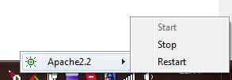
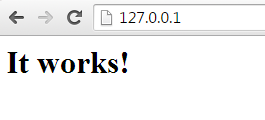
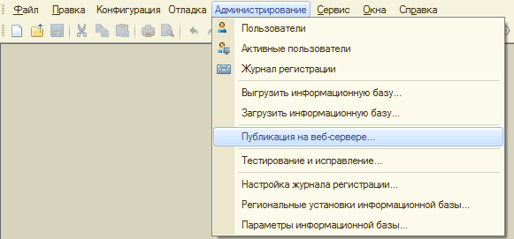
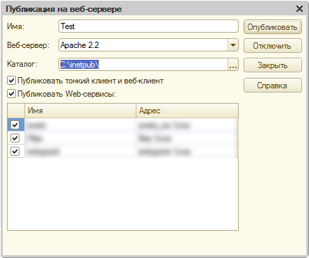
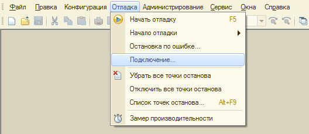
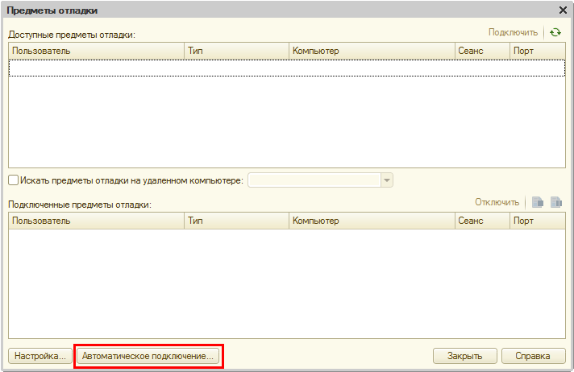
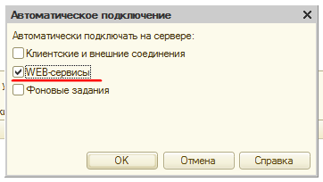

Публикация и отладка веб-сервисов 1С на файловой базе
5 АВГУСТА 2015, 12:21
1. Ставим Apache
В трее появится значок запущенного сервиса:
Если апач не работает
Если значок другой (красный кружок), то скорее всего какая-то другая программа занимает стандартный 80 порт прослушки Апача (например, скайп).
В таком случае правим файлик по адресу:
c:\Program Files\Apache Software Foundation\Apache2.2\conf\httpd.conf
Ищем строчку:
Listen 80
И заменяем ее на любой адрес порта:
Listen 81
Сохраняем файл и перезапускаем Apache (жмакаем левой кнопкой мыши):

Проверка
Проверяем работу апача в браузере по адресу
http://127.0.0.1/
В случае, если вы изменили порт, то адрес будет таким:
http://127.0.0.1:81
Если все хорошо, то вы увидите следующее:

2. Публикация веб-сервиса
Заходим в конфигураторе в пункт меню «Администрирование -> Публикация на веб-сервере...»

Выбираем имя, каталог для публикации, список публикуемых веб-сервисов и жмём «Опубликовать»
Внимание! Не следует в качестве пути указывать корень диска (C:\), 1C начнет чудить и удалять папки на этом диске.

Проверка веб-сервиса
Опубликованный веб-сервис будет доступен по адресу:
http://127.0.0.1/Test/ws/WebServiceName?wsdl
Вместо Test и WebServiceName подставляем указанное «Имя» в публикации и имя вашего веб-сервиса соответственно.
3. Отладка веб-сервиса
Для того, чтобы заработала отладка, нужно в файле:
C:/inetpub/default.vrd
Добавить следующую строку:
<debug enable="true" url="tcp://localhost" />
Должно получиться так:
<?xml version="1.0" encoding="UTF-8"?>
<point xmlns="http://v8.1c.ru/8.2/virtual-resource-system" xmlns:xs="http://www.w3.org/2001/XMLSchema" xmlns:xsi="http://www.w3.org/2001/XMLSchema-instance" base="/Test">
<ws>
<point name="test" alias="test.1cws" enable="true"/>
</ws>
<debug enable="true" url="tcp://localhost" />
</point>
Далее в каталоге:
c:\Program Files\1cv82\conf\
Нужно создать файл с названием comcntrcfg.xml со следующим содержанием:
<config xmlns="http://v8.1c.ru/v8/comcntrcfg">
<debugconfig debug="true" debuggerURL="tcp://localhost:1560" />
</config>
Обязательно перезагружаем Apache.
И в заключении нужно включить отладку веб-сервисов в конфигураторе:



Заключение
Веб-сервисы можно тестировать с помощью программы SoapUI, нажимаем в меню «File -> New SOAP Project», подключаемся и выполняем запросы.
Если поставить точку останова в модуле веб-сервиса в 1С, после выполнения запроса в SoapUI — конфигуратор остановится на точке и позволит отлаживать нужный вам веб-сервис.